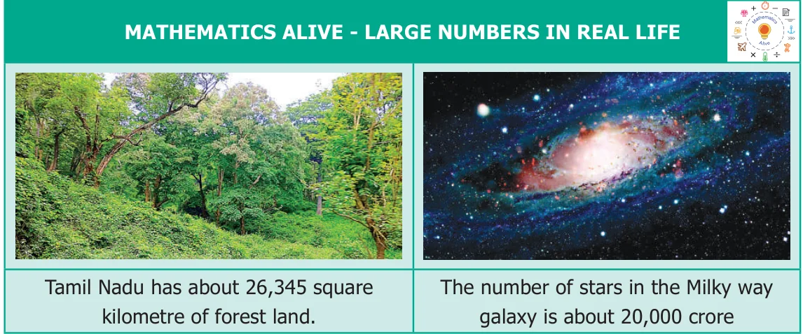

ChapterChapter
1
NUMBERSNUMBERS
Learning Objectives
- ●To understand large numbers and the terms used to represent them.
- ●To compare large numbers and order them.
- ●To employ estimation for large numbers.
- ●To solve word problems involving four fundamental operations.
- ●To understand and use the properties of Whole Numbers.
Read the following conversation between two classmates.
Mani : (Reading Newspaper Headlines)
“Ten thousand people visited the trade fair yesterday”.
Mallika : Wow! That's a lot of people.
Mani : Thank goodness, I went to the
trade fair exactly yesterday!
Mallika : Why… what is so important about it?
Mani : Don’t you see? If I had not gone, they
would have written “Nine thousand nine hundred and ninety-nine people only visited the trade fair yesterday”. It would have been difficult to read and understand!
What do you think about this conversation? Was Mani right?
No! it would still be “Ten thousand people visited!”. Newspapers give (and readers want) a sense of the size, NOT exact values when numbers are large.
You have probably heard names like ‘lakhs’ and ‘crores’ used by elders. We often come across situations that involve large numbers in real life, like the number of people living in a district, the budget of the Government, the distance of stars or the number of bicycles sold in a year and so on. In all these situations, we look for names that convey the “size” of these numbers.

Let us understand the large numbers in detail, and the way they are connected to the numbers learnt earlier.
Recap of Successor and Predecessor
- ●When 1 is added to a number we get its Successor.
- ●When 1 is subtracted from a number we get its Predecessor.
TRY THESE
- ●\(999 + 1 =\) _________.
- ●\(10000 - 1 =\) _________.
- ●The Successor of 4576 is __________.
- ●The Predecessor of 8970 is _________.
- ●The predecessor of the smallest 5 digit number is _________.